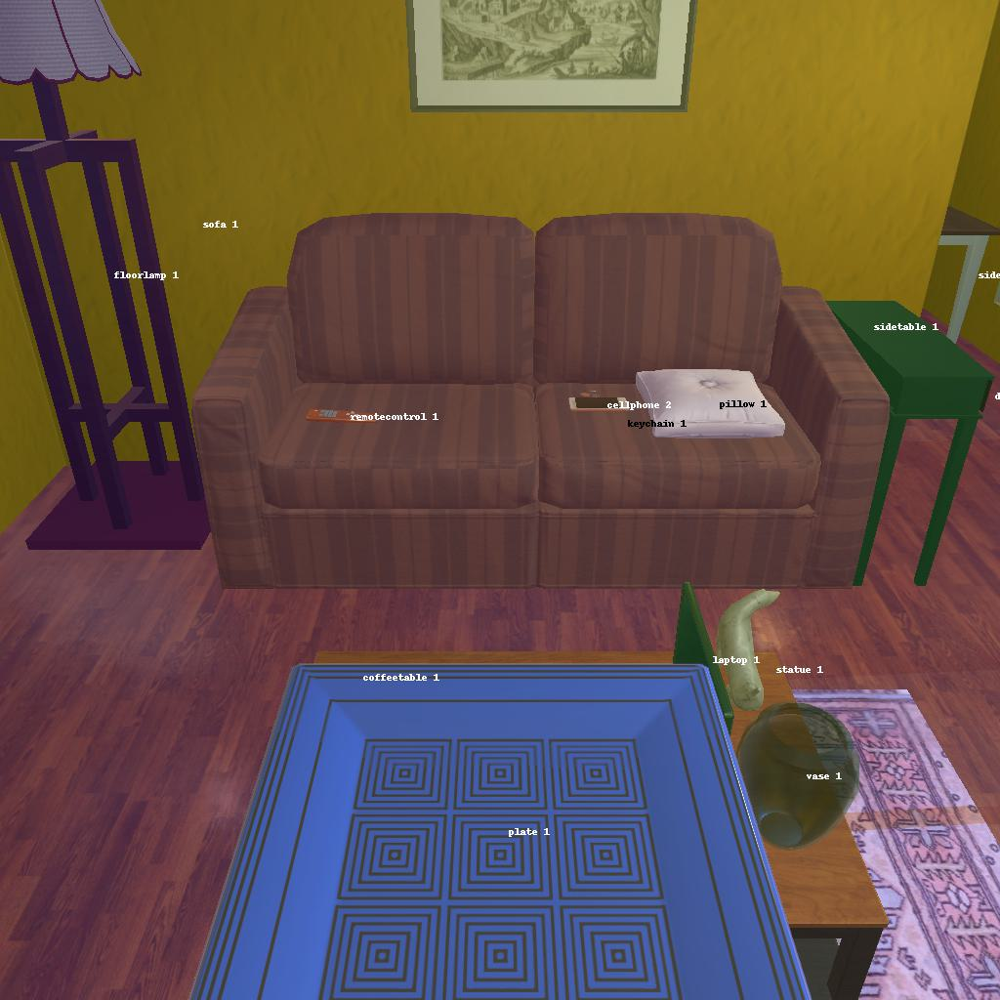

---------------------------------------------------------task: 3---------------------------------------------------------
--------------------------------------------------------------------------------------------------------------------------------------------------------------------
--------------------------------------------------------------------------------------------------------------------------------------------------------------------
Step:--------------------------------------------------------------------------16-------------------------------------------------------------------------------
----------------------------------------
VLM Prompt:
Image1:
**Instruction**
1. Analyze the provided image to identify all visible household objects, focusing on those relevant to the task description "look at plate under the floorlamp."
2. Use the analysis of the image and the task hint "The agent must find an object of the desired type, locate and turn on a light source with the desired object in-hand." to answer the question: what is the most reasonable action in the choices for the task description "look at plate under the floorlamp"?
4. Decide and write the answer using the template: The answer is: (i): , where i is the real number. If there is no desired object in the image, search every place based on **Initial Observation** to find the object. And if no one is exactly correct, choose a similar answer.
**Initial Observation**
You are in the middle of a room. Looking quickly around you, you can see armchair (1), garbagecan (1), tvstand (1), shelf (1-5), sofa (1), coffeetable (1), sidetable (1-2), drawer (1)
**Answer Choices**
(1): go to armchair 1
(2): go to garbagecan 1
(3): go to tvstand 1
(4): go to shelf 1
(5): go to shelf 2
(6): go to sofa 1
(7): go to sidetable 1
(8): go to sidetable 2
(9): go to drawer 1
(10): go to shelf 3
(11): go to shelf 4
(12): go to shelf 5
(13): put plate 1 in/on coffeetable 1
**Answer**
Let's think step by step by following the instructions.
----------------------------------------
----------------------------------------
Original Response:
Firstly, we need to identify all visible household objects relevant to the task. The task is to "look at plate under the floorlamp." In the image, we can see a plate on the coffee table (labeled as "plate 1") and a floorlamp next to the sofa (labeled as "floorlamp 1").
Secondly, based on the task hint, the agent must find an object of the desired type, locate and turn on a light source with the desired object in-hand. The desired object in this case is the plate, and the light source is the floorlamp.
Given the answer choices, the most reasonable action for the task description "look at plate under the floorlamp" would be to go to the coffee table, pick up the plate, and then go to the floorlamp to look at the plate under the light.
Among the provided answer choices, there is no option that includes picking up the plate and going directly to the floorlamp. However, the closest action to the necessary steps is to go to the coffee table where the plate is located.
Therefore, the answer is:
The answer is: (6): go to sofa 1.
This is the closest to the coffee table where the plate is, and from there, the agent can presumably pick up the plate and then proceed to look at it under the floorlamp.
----------------------------------------
----------------------------------------
>>> Refine Original VLM Response and Get Pure Action: go to sofa 1
----------------------------------------
-----------------------------------------------------------------
Running time: 18.366966485977173 seconds
Total Money: 1.14429
-----------------------------------------------------------------
-----------------------------------------------------------------
Text Observation:You arrive at loc 5. On the sofa 1, you see a pillow 1.
-----------------------------------------------------------------
UNSUCCEED